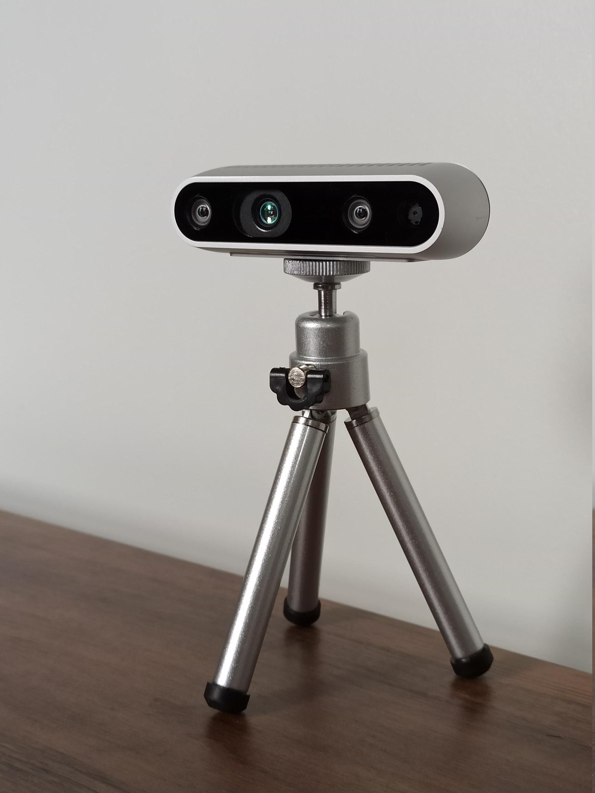
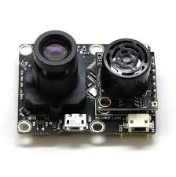

Update
Yes this is a short post. I promise theres a big blog coming on one of the most interesting problems in robotics. So stay tuned for that. So here is an update post on the project.
We are trying to work out the payload capacity of the drone and therefore the thrust that is going to be reauired for successfully flying the drone. We had it worked out when we ran into another problem. Initially we had planned to use just the LiDAR for mapping but as you ca see from my past posts that the LiDAR that we are using is a 2D LiDAR. The issue arises here that since we can see that the drone navigates in 3D thus plotting only 2D may not be the best aproach.
One approach can be to just use a Intel Realsense sensor for sterio vision, but the advantage that the 2D LiDAR sensor has over Realsense is that the 2D LiDAR maps out the position of objects at all angles on a plane whrereas the realsense maps out the area in the direction that its facing.

So after that we realised that the GPS and IMU sensor that we had planned to use wont provide centimeter level accuracy that SLAM needs. So we are planning to go with a VIO (Visual Inertial Odometry). The VIO uses a combination of Visual Odometry and Interial Odometry.
The VIO in theory should allow for centimeter level accuracy.

The VIO uses 2 main methods:
- Kalman Filter (or Extended Kalman Filter) for Intertial Odometry
- Optical Flow for Visual Odometry (note that this may change from algorithm to algorithm)
The visual odometry uses an optical flow sensor that is mounted at the bottom of the drone. The the sensor based on the height of the drone and the change in features of the ground gets an estimation of the drones change in position. But there are some disadvantages to using this, in low light conditions the camera wont be able to get the features to be tracked on the ground therefore leading to errors or garbage values.